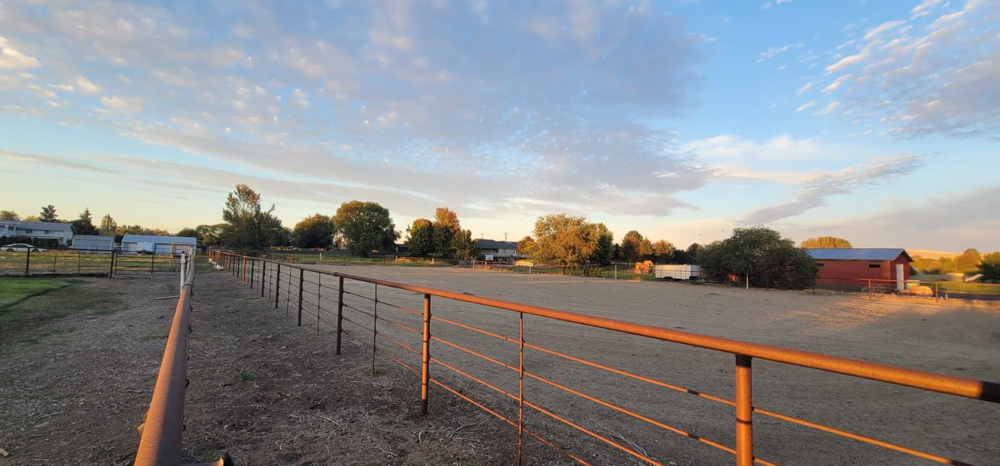
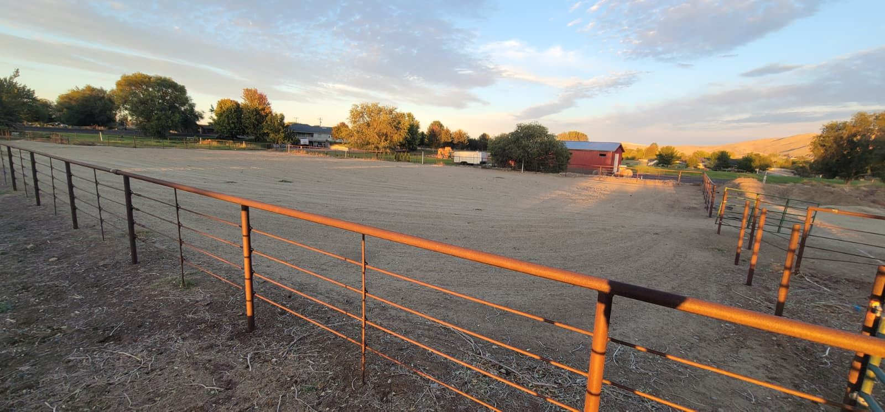

A look before the haul
Know the place
before you arrive.
A first look at the property: paddocks, shelters, the riding arena and a sunset over the pasture. Placeholder frames show the photos still needed.





Driver’s eye view of the entrance, then a wide shot with a long trailer demonstrating turning room.
Show the whole parking / dry-camping area with a tow vehicle and trailer for scale.
Show the actual stationary rental, steps, door and position relative to the paddocks.
Natural light: living area and every bed or sleeping surface; no wide-angle distortion.
Clear views of bathroom and any kitchen facilities supplied, with amenities confirmed by the owner.
Placeholder frames describe photos still needed. Facility dimensions, access arrangements and amenities still need owner confirmation.
Dates. Horses. Rig. Rest.
Put your stop together.
Prepare an availability request. No space is held in this preview.